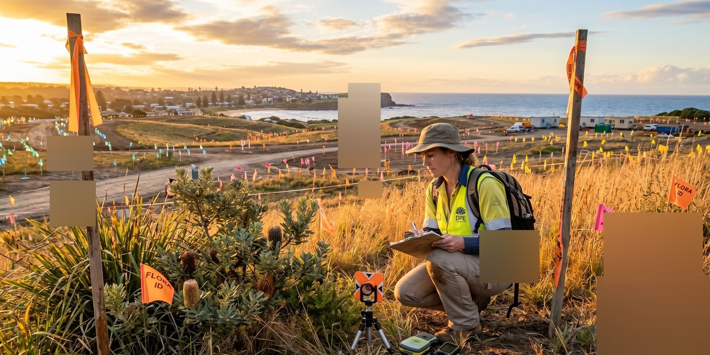

Project site engineering, Sandhills Wetland Project, Byron Shire NSW
A $6M wetland and live-sewer-bypass project delivered with zero breaches, zero complaints, zero service interruptions — now multi-award recognised.
The client
Winslow is a national civil construction contractor engaged on some of Australia's most technically demanding infrastructure programs. For this project Winslow was principal contractor and sub-contracted Eko Engineering to fulfil the Project Site Engineer role, working alongside BASEC Engineering as the lead design and project management firm. The Sandhills Wetland Project was not a standard civil construction job: it combined ecological restoration — the construction of three stormwater treatment wetland cells — with the simultaneous replacement of an ageing sewer main in a live residential and high-tourism precinct.
The site sits within one of NSW's most environmentally scrutinised communities, where public expectation of environmental stewardship is exceptionally high and tolerance for amenity or ecological impact is effectively zero. The central question Eko was engaged to answer: how do you deliver complex, multi-system civil infrastructure in one of Australia's most sensitive environments, on time, without a single environmental breach or service interruption?
Why it matters
Byron Bay is not a generic construction environment. The community is acutely alert to environmental risk, and the council and EPA operate in a context of sustained public scrutiny. The Sandhills Wetland is a significant ecological asset — a constructed treatment system designed to protect downstream receiving waters from urban stormwater contamination and reduce flooding in the town centre. Building within it, around it, and beneath it, while maintaining a live sewer main through a functioning residential and tourist area, is the kind of compounding risk profile that exposes every gap in project engineering discipline.
Projects like this are where the gap between a compliant-looking document and a genuinely managed site becomes visible. The EIS obligations weren't administrative — they were the boundary conditions inside which every decision had to be made. Any failure — a bypass collapse, an odour event, a noise complaint during peak tourist season — would have had consequences far beyond the immediate site.
The problem
On paper, it was a $6 million civil delivery program with a clear scope: three wetland cells, a sewer main replacement, a deadline. In practice it was four separate risk systems operating simultaneously in the same constrained footprint — ecological construction, live sewage infrastructure, residential amenity management, and EIS compliance — each capable of stopping the project entirely if mismanaged.
The sewer bypass was the highest-stakes element. A live sewer main couldn't simply be taken offline; throughout construction, sewage flow had to be maintained through a temporary bypass. A failure — a pump fault, a connection failure, a sequencing error — would not have produced a minor incident. It would have produced a sewage spill into ecologically sensitive land, in a community where that outcome would be reported, investigated, and remembered.
When the ground you are digging through carries live sewage and the community watching you has zero tolerance for error, project engineering is not a support function. It is the job.
The consequence of managing any one of these systems in isolation, without an integrated project engineering discipline holding them together, was not a delay. It was an incident. And in Byron Bay, incidents do not resolve quietly.
Our approach
- Revised the full project management framework for the three-cell wetlands system and sewer main replacement before construction commenced — assessed against actual site conditions, not a standard template.
- Designed and implemented a complex sewer bypass system to maintain continuous service throughout construction — accounting for flow continuity across multiple stages and remaining operationally reliable for the full eight-month period without a single interruption.
- Managed noise and odour control in a densely residential, high-tourism precinct — integrating construction scheduling with community impact windows, maintaining site hygiene, and establishing clear complaint-response protocols.
- Coordinated work sequencing to meet milestones without interrupting sewer service — managing three wetland cells and the main replacement as an interdependent system, with the bypass as the governing constraint.
- Conducted EIS and REF compliance monitoring and environmental reporting continuously throughout construction — tracked live against the EIS conditions, not reviewed at the end.
The result
The Sandhills Wetland Project was delivered as a $6 million program. Three wetland cells were constructed and commissioned. The sewer main was replaced. The live sewer bypass was maintained continuously throughout construction without a single incident. EIS compliance was maintained for the full duration. There were no environmental breaches, no noise complaints, and no service interruptions. In a community and an environment where any one of those outcomes would have defined the project's legacy, none of them occurred.
The project has since been recognised with multiple major awards. Byron Shire Council — as project owner — took first place in the Asset and Infrastructure category (projects over $1.5M, population under 100,000) at the Local Government Professionals 2026 NSW Excellence Awards, and won the Landscape section of the 2026 National Trust (NSW) Heritage Awards. The project was also reported on as part of a $26 million program to reduce flooding and improve water quality for Byron Bay's beaches and surrounding waterways.
These awards belong to Byron Shire Council. Eko contributed project site engineering — the sewer bypass design, construction management, and EIS compliance monitoring that formed the delivery infrastructure. The outcomes the Council has been recognised for are theirs; Eko's contribution was the integrated engineering discipline that made delivering them without incident possible.
Every morning, before anything else, the bypass was checked. Not delegated. Checked. The water management plan was not a document we referred to when something went wrong. It was the thing that stopped anything going wrong.
Jeremy Snowdon-James, Project Site Engineer, Eko
Program context
Published outcomes are attributed to Byron Shire Council as project owner; Eko's role was Project Site Engineer, sub-contracted through Winslow. Byron Shire Council received the 2026 LG Professionals NSW Excellence Award (Asset and Infrastructure) for the Sandhills Wetlands project (council media release, 5 June 2026) and the 2026 National Trust (NSW) Heritage Award — Landscape (council media release, 18 May 2026; covered by the Northern Rivers Times and Architecture AU). The completed restoration was reported on 2 December 2025 by Inside State Government as part of a $26 million program..
What it means to you
You ran the perimeter at 7am. The bypass held. The controls looked right. And then the storm came.
You're the person who checked the weather radar before you left the house. You brief the crew on consent conditions before they touch a shovel. You manage subbies who mean well and move fast, consultants who show up late, and a council looking for a reason to make your site the example. Every day is a calculation: what's the highest-risk thing on site right now, and is it managed?
Here's what most projects get wrong. They treat compliance, bypass management, sequencing, and community impact as separate problems with separate owners. The environmental consultant owns the EIS. The civils sub owns the earthworks. The PM owns the programme. And the day those four systems collide — which they always do, usually during a weather event or a sequencing conflict — nobody owns the outcome.
The CEMP is not the compliance. The CEMP is the promise. What happens on site every day is the compliance.
The Sandhills Wetland Project wasn't your project. But the problem it solved is. A live sewer bypass running through an ecologically sensitive site in a community with zero tolerance for error is a different shape of the same risk you're managing: multiple systems, multiple contractors, one person accountable if anything goes wrong. Different scale. Same mechanism. And the recognition this project earned — two major awards in 2026 — only happened because the construction program underneath it was managed without a single incident.
What made the difference was what happened before the first shovel went in. The project management framework was revised against the actual site conditions, not the template ones. The bypass was designed for the full eight-month programme, not just the first stage. Work sequencing was built around the bypass constraint, not added to it afterwards. EIS compliance was monitored continuously, not reviewed at closeout. This is what we call integrated project engineering — a single discipline holding compliance, construction management, and community impact together as one operating system. We've written this up in a free report called Why Projects Get Stuck.
Download Why Projects Get Stuck
P.S. If you've got a council or EPA inspection scheduled in the next four to six weeks, read this report before it arrives. It won't change what's already on site — but it will give you a clear, defensible account of what a properly sequenced compliance framework looks like, so when the inspector asks why something was done the way it was, you have an answer that comes from a system, not a scramble.
Sources & references
Award (LG Professionals NSW Excellence Award): Byron Shire Council media release, 5 June 2026.
Award (National Trust NSW Heritage Award — Landscape): Byron Shire Council media release, 18 May 2026; Architecture AU, May 2026; Northern Rivers Times, May 2026.
Project reopening and $26 million program context: Inside State Government, 2 December 2025.
Construction final-stage reporting: Mirage News, 19 August 2025.
EIS approval and project background: Byron Shire Council, March 2024.